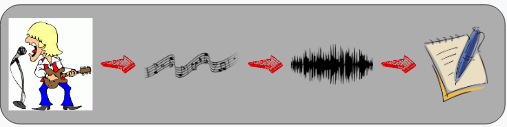
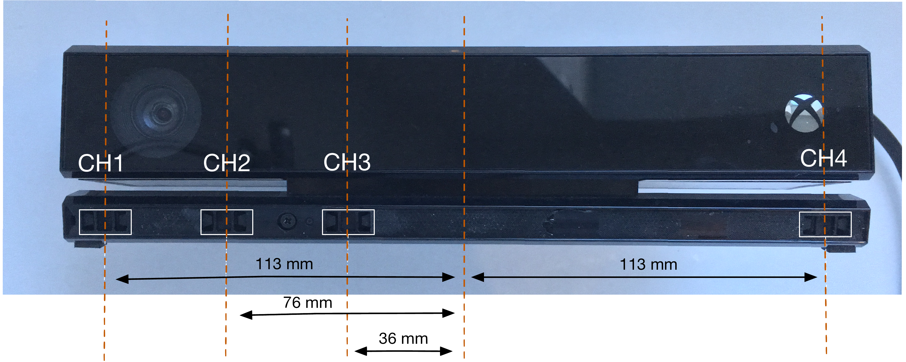
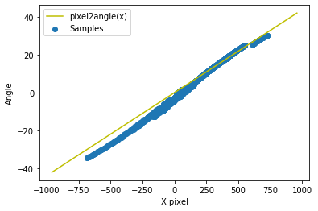
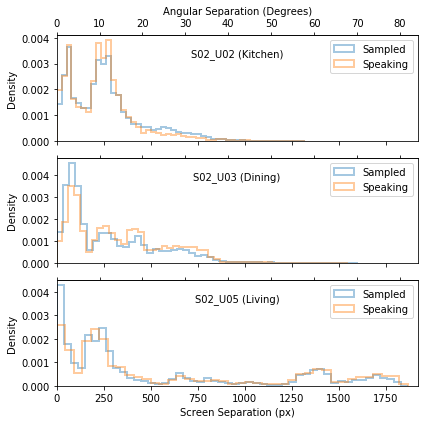
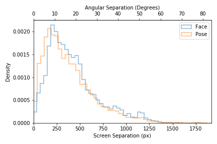
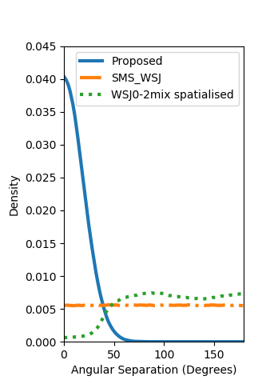
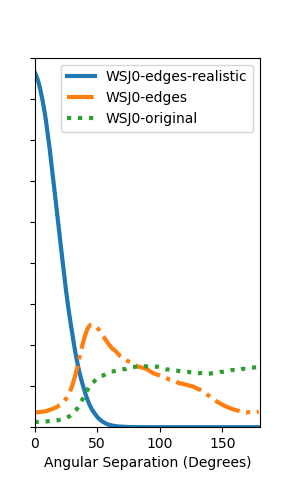

| Precision | Recall | F-Score | |
|---|---|---|---|
| Face | 98.7% | 36.6% | 52.5% |
| Pose | 94.1% | 60.5% | 72.9% |
| X | Y | Euclidean | |
|---|---|---|---|
| Face | 23±2 | 18±1 | 32±2 |
| Pose | 24±3 | 27±2 | 40±4 |


| Screen (px) | Angle (°) | |
|---|---|---|
| Face | 380±268 | 17±12 |
| Pose | 427±274 | 19±12 |
| Screen (px) | Angle (°) | |
|---|---|---|
| Pose | −23±323 | −1±14 |
| Face | −35±302 | −2±13 |


| Mask | Enhancement | Dataset | SDR | PESQ | STOI | WER |
|---|---|---|---|---|---|---|
| cACGMM | MVDR | Proposed | 9.0 | 1.85 | 0.74 | 31.49 |
| cACGMM | MVDR | SMS_WSJ | 12.3 | 2.07 | 0.82 | 18.15 |
| cACGMM | Mask | Proposed | 7.1 | 1.73 | 0.71 | 49.09 |
| cACGMM | Mask | SMS_WSJ | 9.5 | 1.83 | 0.78 | 40.01 |
| None | Channel=0 | Proposed | -0.4 | 1.49 | 0.66 | 78.93 |
| None | Channel=0 | SMS_WSJ | -0.4 | 1.50 | 0.66 | 78.73 |
| IBM | MVDR | Proposed | 10.4 | 1.88 | 0.77 | 21.23 |
| IBM | MVDR | SMS_WSJ | 12.9 | 2.06 | 0.83 | 14.23 |
| Dataset | SDR | PESQ | STOI |
|---|---|---|---|
| WSJ0-original | 15.1 | 2.50 | 0.83 |
| WSJ0-edges | 15.2 | 2.61 | 0.82 |
| WSJ0-edges-realistic | 14.5 | 2.61 | 0.71 |